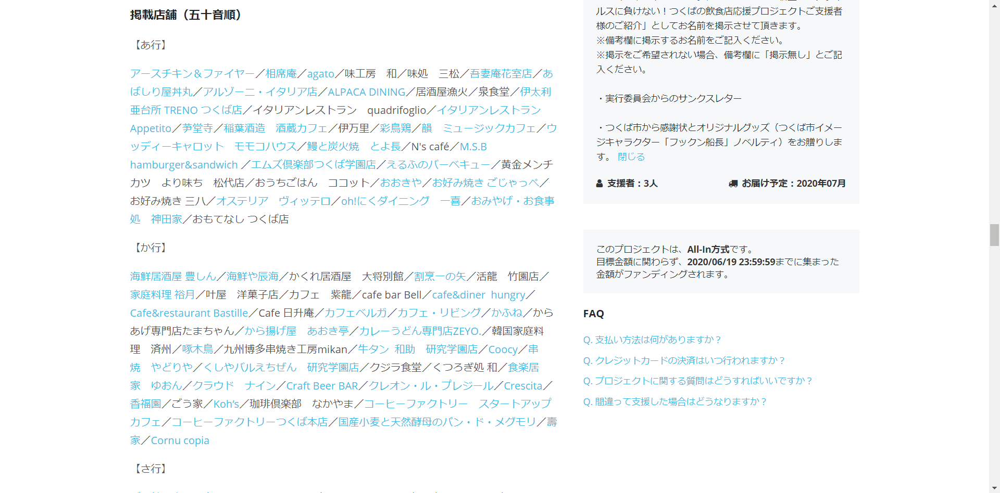

最終更新日：
つくばの飲食店応援プロジェクトに参加しました！
記事の内容
新型コロナウイルスが世界で猛威を振るっています。WHOが発行しているCoronavirus disease (COVID-2019) situation reports - 198のデータ（日本時間の2020年8月5日17時までにWHOが受け取ったデータを集計したもの）によると、全世界の症例数は18,354,342件、死亡者は696,147人。日本の感染状況については、厚生労働省が公開している2020年月8日5時時点でのデータによると、感染者は41,129例、死亡者は1,022名となっています。
コロナの影響は飲食店にも及んでいます。飲食店.COMの調査によると、9割弱の飲食店では2020年5月の売上が前年同月の売上よりも下がりました。茨城県でも食事提供施設で営業時間短縮要請が出ました。
そんな中、僕の地元つくば市では売上減少に悩まされる飲食店を支援するプロジェクトが始動しました！その名も「つくばの飲食店応援プロジェクト」。
このプロジェクトに参加したので、プロジェクトの概要や参加した動機などをまとめました。
プロジェクトの概要
つくばの飲食店応援プロジェクトはCAMPFIREという購入型クラウドファンディングを利用しています（クラウドファンディングについて詳しく知る）。「購入型」なので「寄付」ではありません。2通りの支援方法があります。
- 特定の飲食店を支援する（以下、「個別支援」）
- この企画自体やつくばの飲食店全体を支援する（以下、「全体支援」）
個別支援は、プロジェクトに参加している飲食店の食事券を購入することでその店を支援する方法です。購入額の概ね2割上乗せ分の食事券が貰えます。例えば、5000円を払うと6000円分の食事券が貰えます。
全体支援で集まった金額は、必要な経費を除いて、プロジェクトに参加しているすべての飲食店に配分されます。食事券はもらえませんが、つくば市のHPに名前が掲示されたり、実行委員会からサンクスレターを貰えたり、つくば市から感謝状を貰えたりします。
詳しくはつくばの飲食店応援プロジェクトのページに書いてあります。
なぜ支援が必要なのか
コロナの影響で飲食店が閉店に追い込まれている状況に対して、ネット上ではこんな意見が散見されました。
「貯金しないのが悪い」
僕もふと疑問に思いました。「貯金を崩せは何とかやり過ごせるのでは？」と。
下の記事を読んで、自分が無知であったことを痛感し、飲食店を支援するための十分すぎる理由を知ることができました。
支援内容と理由
全体支援として20万円を払いました。
僕が今回支援をした目的は2つです。
- 売名
- 経験を積む
売名。聞こえは悪いですが、本心なので正直に言います。このプロジェクトに参加して支援活動の様子をこのように記事にまとめたりTwitterで発信したりすることで、もしかしたら僕の認知度が高まるかもしれません。全体支援を選んだのも、つくば市のHPに僕の名前が載ったり感謝状を頂けたりと認知度上昇の要因になりそうだからです。認知度が高まって仕事を依頼してくれる人が増えることを期待しました（今はほぼ無職みたいなものなので...）。
経験は財産です。未知に踏み込むと、新たな情報を得られ、視野が広くなり、新たな方向性が見え、柔軟な思考ができます。これまでに金銭的な支援と言えば赤い羽根募金くらいしかしたことがありませんでした（10円？100円？）。「高額なお金を支援したときに自分はどう感じどう行動するのか」という未知への興味も動機になりました。
このように、支援を始めた動機は「飲食店を助けたいから」ではありません。自分のために支援をしたわけですが、それは全く問題ではないと考えています。だって、支援者の意図に関係なく、支援金はプロジェクトの成功や飲食店の支援に寄与しますからね。
ちなみに、クラファン終了直前に13,000円分の個別支援もしました。
その他の活動1：飲食店マップ作成
個別支援をする場合、プロジェクトに参加している飲食店の中から自分の好きな店舗を選び、その店で使える食事券を購入します。参加店舗はプロジェクトのページから確認できるのですが、このように一覧表示されています。
運営さんは五十音順とジャンルごとの2種類の方法で飲食店を紹介しており、飲食店同士は「／（スラッシュ）」区切りで並べられているだけです。
僕の初見の印象は「見づらい」でした(笑)
そこで僕は、今後支援を検討する人が店を簡単に見つけられるようにGoogleマップに参加店舗をマークした飲食店マップを作成しました。
このマップの特徴は次の通りです。
- 最寄りの店を支援できるか確認できます
- 飲食店はジャンル分けしてあります。
- ジャンル名と飲食店名はプロジェクトのページに記載されているものと同じです。
- 任意のジャンルの飲食店をマップで非表示にすることができます。
- 店をクリックするとHPやSNS等のリンクが表示されます。
- 写真や営業時間や口コミなど、Googleマップに元々載っていた情報も確認できます。
飲食店マップを制作したことを運営さんに伝えたところ、プロジェクトページのコメントに載せてくれました！僕が運営さんに送った文章をそのまま載せていただきました（改行は消えてしまっているけどこれはおそらくコメントの文章には改行をいれられないからかな）。
その他の活動2：プロジェクトの弱点を補強
つくば市事業者応援チケット飲食店支援事業内容（PDF）によると、以下の合計が各飲食店への振込額になります。
- 各飲食店の食事券販売額
- 食事券販売額総額の２割を各飲食店に均等配分した額
- 飲食店を指定しない寄付総額から経費を差し引いた額を各飲食店の食事券販売額に応じて比例配分した額
2020年5月11日13時20分の時点で、個別支援をした人数は1084人、全体支援をした人数は10人と、支援者のほとんどは個別支援を選択していることから分かる通り、食事券を多く購入してもらった飲食店ほど受け取れる額が多くなります。
ではどんな飲食店が食事券を多く購入してもらえるのでしょうか。認知度と評価が高い店は多くの人に食事券を買ってもらえるはずです。認知されていないと評価はできないので、一番重要なのは認知度でしょう。
店によって認知度に差があるので、受け取れる額も店ごとに変わるでしょう。支援を求めてこのプロジェクトに参加したのに、認知度が低いせいで支援金を少額しか受け取れない飲食店がきっとあるはずです。これがこのプロジェクトの欠点です。
もうプロジェクトは始まってしまっているので、欠点をくどくど主張するだけでは意味がありません。今更方向転換はできないですから。重要なのはその欠点を補うこと、すなわち、認知度が低い飲食店（≒ HPやSNSアカウントがなく、口コミ数が少ない飲食店）をサポートすることです。
このプロジェクトに参加している飲食店の中から独断でそのような店を選び、困っていることがないかお聞きしました。僕にできることであれば無償でなんなりとサポートさせていただくつもりでした。
まぁ、全部断られましたが(笑)
突然連絡が来て「なんなりとサポートいたしますよ」なんて言う奴は怪しいですよね～。
その他の活動3：小さいこといろいろ
前売り券販売に関係する資金決済法という法律について調べてみたり、ネットショップ立ち上げのために利用できるサービスを調べてみたりして、Twitterに投稿していました。わざわざここにまとめるほど内容の濃い活動ではないので、Twitterのリンクだけ貼っておきます。
フィードバック
ご意見やお聞きしたいことがございましたら、TwitterのDMかメールにご連絡ください。